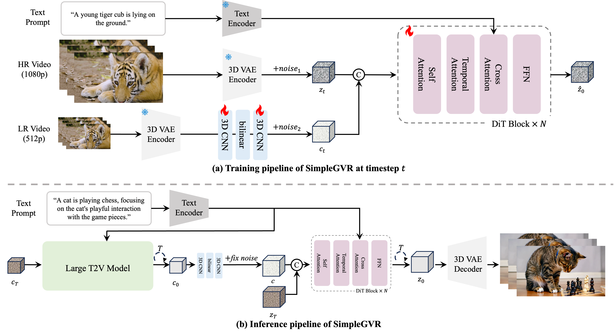
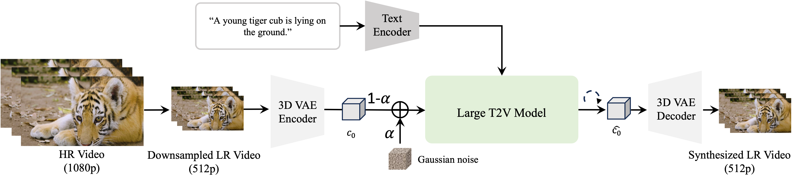
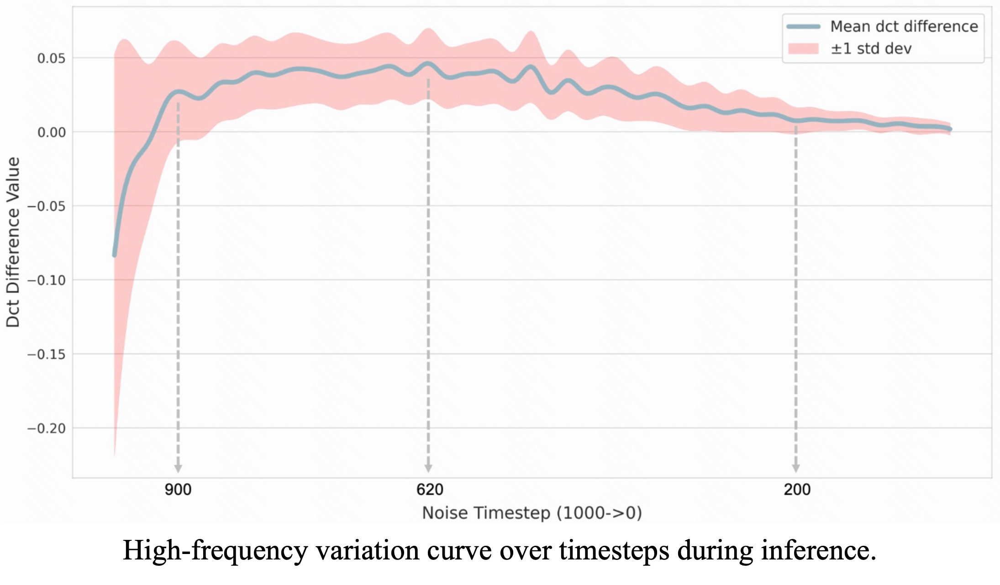
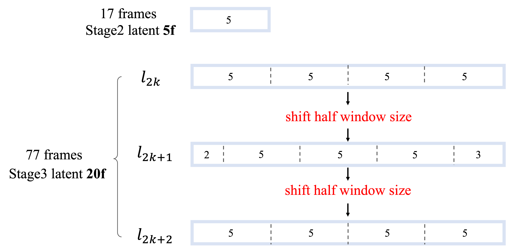

SimpleGVR
A Simple Baseline for
Latent-Cascaded Video
Super-Resolution
Abstract
Latent diffusion models have emerged as a leading paradigm for efficient video generation. However, as user expectations shift toward higher-resolution outputs, relying solely on latent computation becomes inadequate. A promising approach involves decoupling the process into two stages: semantic content generation and detail synthesis. The former employs a computationally intensive base model at lower resolutions, while the latter leverages a lightweight cascaded video super-resolution (VSR) model to achieve high-resolution output. In this work, we focus on studying key design principles for latter cascaded VSR models, which are underexplored currently. First, we propose two degradation strategies to generate training pairs that better mimic the output characteristics of the base model, ensuring alignment between the VSR model and its upstream generator. Second, we provide critical insights into VSR model behavior through systematic analysis of (1) timestep sampling strategies, (2) noise augmentation effects on low-resolution (LR) inputs. These findings directly inform our architectural and training innovations. Finally, we introduce interleaving temporal unit and sparse local attention to achieve efficient training and inference, drastically reducing computational overhead. Extensive experiments demonstrate the superiority of our framework over existing methods, with ablation studies confirming the efficacy of each design choice. Our work establishes a simple yet effective baseline for cascaded video super-resolution generation, offering practical insights to guide future advancements in efficient cascaded synthesis systems.
Overall Framework
Our cascaded video generation framework operates within a latent space defined by a pre-trained VAE. The
framework comprises two core components (shown in figure (b) below):
(i) A computationally intensive base Text-to-Video (T2V) model, which employs a Diffusion Transformer
(DiT) architecture to generate low-resolution video latent representations.
(ii) A cascaded latent video super-resolution model, termed SimpleGVR, which adopts a lightweight
architecture to efficiently enhance the base model's output into high-resolution video latent
representations.

Three key perspectives in SimpleGVR
-
Degradation modeling, which synthesizes training pairs to ensure better alignment between
the VSR model and its upstream generator.
- Flow-based degradation, where optical flow guides motion-aware color blending and adaptive blurring.
-
Model-guided degradation, where noise is added to low-resolution video frames and partially denoised
using the base T2V model. (see picture below)

-
Training configurations, which promote faithful detail generation.
-
Detail-aware sampler, where higher sampling probabilities are assigned to the timestep intervals
that contribute more to detail enhancement. (In the figure below, a higher value at a timestep
interval indicates greater importance for enhancing visual details.)
 - Middle noise augmentation interval (0.3~0.6). When SimpleGVR is trained with noise in this interval, it is capable of enhancing high-frequency details while still being able to correct structural errors in the input frames.
-
Detail-aware sampler, where higher sampling probabilities are assigned to the timestep intervals
that contribute more to detail enhancement. (In the figure below, a higher value at a timestep
interval indicates greater importance for enhancing visual details.)
-
Efficient pseudo-global computation, which address high-resolution video computation demands.
- Interleaving temporal unit, which expands SimpleGVR’s capability to handle 77 frames in an effective way. 
-
Sparse local attention, which reduces computational overhead during inference.
Results